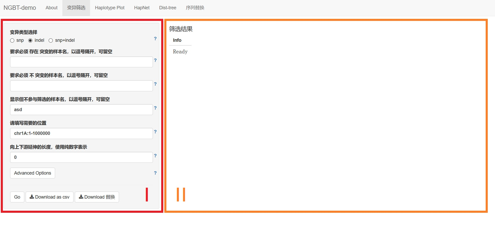
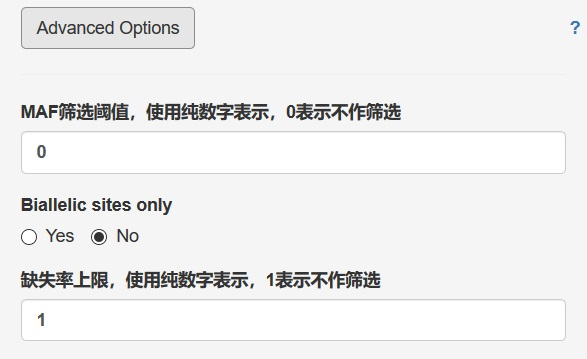

1. variation subset

It's 2 panels here. The Left one, Ⅰ, is the input zone, while the right part is the result display zone.
This function subset the VCF file by the requirements given in the left (part Ⅰ), and shows the child collection on the right (part Ⅱ).
Note that all the conditions are connected by logic AND (&&)
1.1. There are several inputs on the left:
Variation Type: select one of the three ratios that represent
SNP (Single Nucleotide Polymorphism) only,indel (input/delete) onlyorsnp + indel.Samples: in the three text inputs, you can either use labels of single sample, or groups. Different names should be splited by comma, like
Sample1,Sample2. If you want to use group, put a hash before it, likeSample1,Sample2,#Group1. Make sure that samples only appear ONCE in totall.- Samples that DO HAVE mutations: samples here will be asked to have mutations in the result. If they donnot have in some postion, these postion won't appear.
- Samples that MUST NOT HAVE mutations: contrary to the former, postions which samples here have mutations will be deleted. So that samples here won't appear to have mutations in the result.
- Samples without filtering: samples here won't be dealed, just display.
Regions: input wanted region, with the format
CHROM:BEGIN-END, or gene name. Like the samples, when you want more than one region, use comma to split.Extra length before AND after the regions (bp): sometime when you want to use the gene name as region, you want some extra postions in the upstream or downstream. Value here is simply added to the maximum of each region, and subtracted from the minimum of each region.
Advanced Options: click this button to show/hide some advanced options. Note that when these options are hide, they won't affect the result.
1.2. Advanced Options

Click the button Advanced Options, and then some more options appeared.Note that when these options are hide, they won't affect the result.
MAF filtering threshold (0 for disable): Minor allele frequency (MAF) is the frequency at which the second most common allele occurs in a given population. Larger the value is, lesser the result postions are. If the value is 0 (by default), this filter function is disabled.
Biallelic sites only: A biallelic site is a specific locus in a genome that contains two observed alleles, counting the reference as one, and therefore allowing for one variant allele. A multiallelic site is a specific locus in a genome that contains three or more observed alleles, again counting the reference as one, and therefore allowing for two or more variant alleles. Select Yes, all postions in the result that have multiallelic will be deleted.
Maxium of missing rate (1 for disable filtering): Lesser the value is, lesser the results are.
1.3. RUN, and Download
Click the Run button when get all options ready. Table on the right will show the result of subsetting, or some error message if the input isn't correct.
Click Download as csv to download current result on the right in format csv.
Click